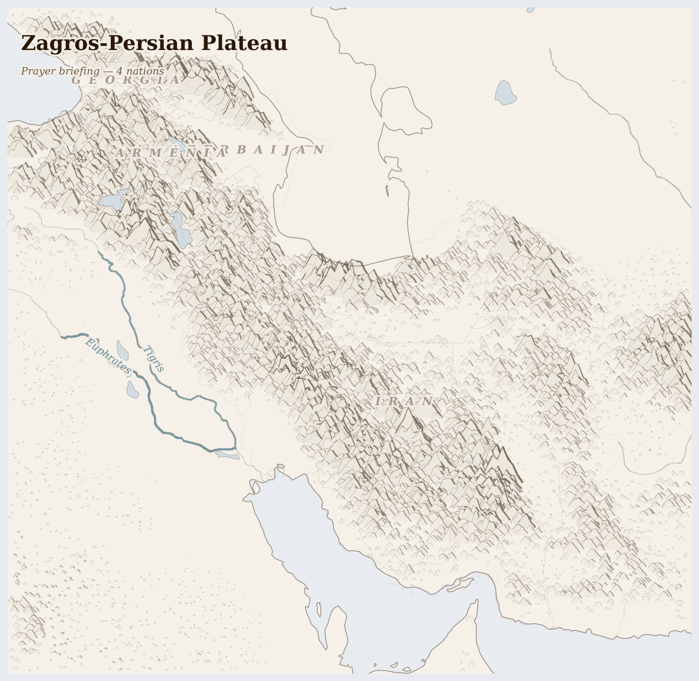

Zagros-Persian Plateau106M people
ecology last verified 2 months ago
In Khuzestan province, where the Karun River meets the refinery pipes, an Arab farmer wakes before dawn to check the canal that once carried water to her family's date palms. The canal has run dry for three years now — diverted upstream to cool the oil refinery that employs none of her neighbours and poisons the air her children breathe. Fifty degrees in summer. No water. The dates are dying.
This Week
Iran: Summary The humanitarian consequences of the crisis in the Middle East have intensified since February 2026.
Iran: The escalation of hostilities across the Middle East and beyond has triggered a humanitarian crisis spanning multiple regions in an already fragile context, with significant impact to population mobility.
Lives Lived Here
Before the Karun River reaches Ahvaz, it passes through three dams and an oil refinery intake. By the time it arrives in the fields south of the city, where Khuzestan's Arab farming communities have grown sugarcane and wheat for generations, the flow is lower than it was, and the colour is wrong. The women who transplant rice seedlings in their paddies notice first — the water does not smell right, the yield is down, the children cough more in harvest season. The refinery upstream is operated by the National Iranian Oil Company under IRGC-affiliated management. Its water allocation was settled before the farmers' was.
In the Zagros highlands above Isfahan, a Bakhtiari herder begins the spring migration — the il-rah, the tribal road — driving 400 sheep upward along paths his family has walked since before the Safavids. The snowline is higher this year. The spring pastures are drier. He will reach the highland meadows later and leave them earlier, and the wool clip will be thinner. His wife weaves carpets through the winter in a village that is emptying — the young men have gone to Isfahan for construction work, where Afghan labourers already undercut their wages because Afghan workers have no legal standing to refuse.
In a brick kiln on the outskirts of Tehran, an Afghan Hazara man stacks bricks in 40-degree heat. He has been in Iran for eleven years, undocumented for the last six. His wages are half what an Iranian worker would receive, and he cannot complain to anyone — deportation is the answer to every grievance. He sends 200,000 tomans a month to his wife in Herat through the hawala network. She uses it to buy flour at prices that have tripled since the Taliban took power. The connection between his labour and her survival crosses two borders and depends entirely on the goodwill of men he has never met.
On the shore of what remains of Lake Urmia, a farmer in Shabestar walks the cracked earth where water stood ten years ago. The salt is visible on everything — on the soil, on the remaining trees, on his boots. His apple orchard produced 12 tonnes a year before the lake began to die. Last year it produced three. The dam upstream was built to irrigate wheat fields in a province that already had enough wheat. The lake was sacrificed for a surplus no one needed.
In a brick kiln on the outskirts of Tehran, an Afghan Hazara man stacks bricks in 40-degree heat. He has been in Iran for eleven years, undocumented for the last six. His wages are half what an Iranian worker would receive, and he cannot complain to anyone — deportation is the answer to every grievance. He sends 200,000 tomans a month to his wife in Herat through the hawala network. She uses it to buy flour at prices that have tripled since the Taliban took power. The connection between his labour and her survival crosses two borders and depends entirely on the goodwill of men he has never met.

Reference map. Country boundaries and features are approximate.
What Presses
The weight on Zagros-Persian Plateau
Khuzestan, Iran — The hottest inhabited place on earth in summer — temperatures exceeding 50 degrees Celsius — and the province where Iran extracts most of its oil. Khuzestan's Arab communities have farmed along the Karun for centuries, growing dates, sugarcane, and wheat in the river's floodplain. Today the river is dammed upstream for hydropower and diverted for oil refinery cooling. In July 2021, when the taps ran dry and the temperature hit 52 degrees, people took to the streets in Ahvaz, Susangerd, and Hamidiyeh. Security forces opened fire. At least ten people were killed, hundreds arrested. The protests were about water. The response was about control. The air quality in Ahvaz regularly ranks among the worst in the world — particulate matter from refineries, dust from dried marshlands, and flaring from wellheads. The people who breathe this air are not the people who profit from the oil beneath their feet.
Lake Urmia basin, West and East Azerbaijan provinces — Lake Urmia has lost 90% of its water volume since the 1990s. What was once 5,200 square kilometres of hypersaline lake — sustaining brine shrimp colonies, flamingo migrations, and the agricultural economy of five million people — is now largely salt flat. In summer, wind lifts salt particles from the exposed lakebed and deposits them across orchards, vineyards, and wheat fields in three surrounding provinces. Apple and grape farmers in Shabestar and Bonab report crop losses of 60-80%. The cause is documented: over 40 dams built on the lake's feeder rivers since the 1990s, diverting water to irrigate crops (often wheat for which Iran already had surplus) upstream. The Urmia Lake Restoration Programme, launched in 2013, has released some water but cannot reverse the structural over-allocation. The salt dust is now a respiratory health crisis for surrounding communities.
Sistan-Baluchestan, Iran / Helmand basin — Iran's poorest province, bordering Afghanistan and Pakistan, where Baluch communities depend on the Hamoun wetlands — a UNESCO Biosphere Reserve fed by Afghanistan's Helmand River. When the Kajakai Dam and upstream irrigation in Helmand province reduce the flow, the Hamoun dries to cracked earth and the fishing and farming communities around it lose everything. This has happened repeatedly since the 1990s. The Helmand water treaty between Iran and Afghanistan, signed in 1973, has never been fully implemented. Under Taliban governance, upstream extraction has intensified. The Baluch communities caught between a failing wetland and a state that treats their province as a security zone rather than a place where people live — Sistan-Baluchestan has the highest poverty rate, the lowest literacy rate, and the heaviest security presence in Iran.
Cascade Chains
Zagros snowpack decline → Reduced river flow → Dam operators prioritise hydropower over irrigation → Khuzestan farmers lose water allocation → Food production falls → Import dependence rises → Sanctions block imports → Food prices spike (IRN — 81% water stress; 90% of hydropower from Zagros-fed rivers; rial devalued 90%+ since 2018)
Oil extraction in Khuzestan → Water diverted for refinery cooling → Arab farming communities lose irrigation → Protests → Lethal crackdown → Community silencing → Extraction continues uncontested (IRN — 2021 Khuzestan protests, at least 10 killed; Ahvaz air quality among world's worst)
Lake Urmia over-allocation → 90% volume loss → 5,000 km² salt flat exposed → Salt dust storms damage agriculture across three provinces → Farmer livelihoods collapse → Rural-to-urban migration → Urban water demand rises → Further extraction from already-stressed aquifers (IRN — 40+ dams on feeder rivers; 5M people affected; 60-80% crop losses in surrounding orchards)
Who Sustains This
Islamic Revolutionary Guard Corps · state budget; oil smuggling; construction conglomerates (Khatam al-Anbiya); sanctions evasion networks
Driven by: We must defend the Islamic Republic and resist Western imperialism
The trap: Defending sovereignty through proxy wars that invite the threats sovereignty requires defense against. The IRGC's regional operations provoke the Israeli strikes and Western sanctions that justify its existence. The guard that protects the revolution also ensures the revolution remains permanently under siege—which is precisely the condition that keeps the guard in power.
One resource stream flows out of this plateau — crude oil, worth tens of billions annually at its destination in Chinese refineries. What does not come back is the water, consumed by refineries and evaporated from dying lakes. What does not come back is the air, filled with particulate matter from wellheads and flare stacks. What does not come back is the revenue, captured by entities whose accountability runs upward to the Supreme Leader, not outward to the provinces where the oil is found. 954,710 displaced (total); crude oil leaving; precipitation 4% of normal.
The qanat does not pump. It waits for the water table to rise to meet it — a technology built on patience, on the assumption that what is taken will be returned. The deep well does not wait. It takes what is there and moves on. The question is not whether the water will run out, but what kind of people we become when we stop waiting for it to come back.
For Prayer
For the people of Iran, 4998 conflict fatalities and 225 events recorded in 3-month period. armed groups operations concentrated in multiple regions — that those bearing this weight may find help.
For the 955,000 people displaced from their homes — especially in Iran, where the crisis is most acute. For safety on the road and welcome at the journey's end.
For the land itself — water stress averaging 81% across the region. For pastoralists seeking grazing, for farmers awaiting rain, for the rivers and aquifers that sustain everything. For the land beneath their feet, from which crude oil is extracted to benefit those far away.
Especially for Iran, facing the most severe convergence of crises in this region. This week in Iran: Summary The humanitarian consequences of the crisis in the Middle East have intensified since February 2026. For those making impossible decisions about whether to stay or flee, and for those who cannot choose.
For humanitarian workers and missionaries in Zagros-Persian Plateau — for their safety, their courage, and their capacity to reach those most in need. This week in Iran: The escalation of hostilities across the Middle East and beyond has triggered a humanitarian crisis spanning multiple regions in an already fragile context, with significant impact to population mobility.
For every act of resistance and care in Zagros-Persian Plateau — communities sharing food, farmers saving seed, neighbours sheltering neighbours. That these small acts of defiance outlast the crisis.
By the waters of Babylon we sat down and wept, when we remembered Zion. As for our lyres, we hung them up on the willows that grow in that land.
God our redeemer, you have delivered us from the power of darkness and brought us into the kingdom of your Son: grant, that as by his death he has recalled us to life, so by his continual presence in us he may raise us to eternal joy; through Jesus Christ your Son our Lord, who is alive and reigns with you, in the unity of the Holy Spirit, one God, now and for ever.
Amen.
Seeds of Hope
In villages around Lake Urmia, farmers have organised water-user associations to negotiate directly with dam operators for environmental flow releases — a form of collective bargaining that operates in the narrow space between state infrastructure and community survival. Bakhtiari and Qashqai tribal councils continue to coordinate transhumance migrations despite encroaching oil infrastructure and military zones, maintaining pastoral routes that predate every government that has tried to settle them.
For Reflection
How do you hold the knowledge that the seasonal rhythms people depend on are being broken by forces beyond their control?
What borders separate their suffering from your safety?
Looking Ahead
- Iran's water crisis will intensify through the summer months (June-September), when Khuzestan temperatures regularly exceed 50 degrees Celsius and water demand peaks.
- The structural drivers — Zagros snowpack decline, over-allocation of river water to dams and industry, aquifer depletion from deep wells — are all accelerating and none are being reversed by current policy.
- The Urmia Lake Restoration Programme has achieved modest water releases but cannot overcome the 40+ dams that intercept the lake's feeder rivers.
Carry This
What to bring with you from this briefing
Take Action
Organizations working at the nodes this briefing traces
Documents human rights conditions for ethnic minorities in Iran, including Bakhtiari and Qashqai pastoralists, Arab communities in Khuzestan, and Kurdish populations in the Zagros highlands. Reports on land confiscation, water diversion, and cultural suppression.
Investigates the cost-bearers at the intersection of the briefing's flows — Bakhtiari pastoralists whose transhumance routes are severed by dam construction, Arab communities in Khuzestan whose water is diverted to oil operations, and Kurds displaced by military operations in the Zagros borderlands.
Monitors Iran's energy sector including Khuzestan oil production, sanctions impacts on export capacity, and environmental consequences of aging infrastructure. Publishes analysis on oil revenue distribution and subsidy reform politics.
Tracks the Khuzestan oil flow the briefing documents — where Iran's largest petroleum reserves are extracted from Arab-majority Ahwaz province under conditions of extreme environmental degradation, connecting oil revenue that funds the state to air pollution, water contamination, and ethnic marginalization in the extraction zone.
Iranian government program attempting to restore Lake Urmia, which has lost 90% of its surface area since the 1990s due to dam construction and agricultural over-extraction. Documents salt storm health impacts on surrounding communities.
Addresses the Lake Urmia crisis the briefing traces — where dam construction on feeder rivers and orchard irrigation have desiccated a lake that once supported brine shrimp fisheries and flamingo populations, producing salt storms that damage agriculture and cause respiratory disease in surrounding Kurdish and Azeri communities.
Independent organization documenting human rights violations in Iran, including labor rights abuses in the oil sector, repression of environmental activists, and persecution of ethnic minority communities who protest resource extraction and water diversion.
Documents the repression faced by those who resist the flows the briefing traces — environmental activists imprisoned for protesting Lake Urmia desiccation, Khuzestani Arabs who demonstrated during water shortages, and labor organizers in the oil and petrochemical sectors demanding safe working conditions.
Iranian civil society organization supporting Indigenous and pastoral communities' territorial governance. Works with Bakhtiari, Qashqai, and other pastoral peoples to document and protect transhumance routes, communal rangelands, and traditional water management systems.
Supports the Bakhtiari transhumance the briefing documents — where seasonal migration between Zagros highland summer pastures and Khuzestan lowland winter grazing has been disrupted by oil infrastructure, dam reservoirs, and road construction, connecting energy extraction to the destruction of pastoral livelihoods sustained over millennia.
Research program documenting labor migration flows from Iran, Afghanistan, and South Asia to Persian Gulf states. Publishes data on worker demographics, remittance patterns, kafala system abuses, and the economic dependency of sending communities.
Tracks the migrant labor flow the briefing identifies — where Iranian, Afghan, and Pakistani workers in Gulf construction and oil sectors face kafala system exploitation, and where remittance dependency shapes household economies across the Zagros plateau, connecting Gulf petroleum wealth to transnational labor extraction.
Where this comes from (7 sources)
Tier 1 = UN agencies & peer-reviewed · Tier 2 = community voice & justice orgs · Tier 3 = corporate / unverified (require 2+ independent sources)
- IEA, Iran Energy Profile, 2024. https://www.iea.org/countries/iran
- UNEP, Urmia Lake Environmental Assessment, 2024
- Amnesty International, Iran: Authorities' Brutal Response to Khuzestan Water Protests, 2021
- Semsar Yazdi, A.A. and Labbaf Khaneiki, M., Qanat Knowledge: Construction and Maintenance, UNESCO/ICQHS, 2017 T1
- IMF, Islamic Republic of Iran: Article IV Consultation, 2024
- FAO AQUASTAT, Iran Country Profile, 2024. https://www.fao.org/aquastat T1
- World Bank, Iran Economic Monitor, 2024 T1
Generated 2026-05-11